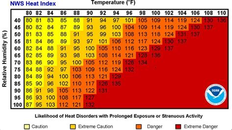

1-15: Nested loops and Matrices
0.1 To-Do
- nested for loop work well with breakpoints…
1 Purpose
embedded for loops
functions within a script
using matrices
named values in a vector
2 Questions about the material…
The files for this lesson:
Script (only one this lesson): you can download the script here
Data (should there be data?)
If you have any questions about the material in this lesson, feel free to email them to the instructor, Charlie Belinsky, at belinsky@msu.edu.
3 Functions within a script
In the previous two lessons, we created a separate script for the functions used in the lesson. For this lesson, the function used, isPrime3(), has been put inside the main script. It is not usually best place to put functions inside the calling script (why this is true will be an application question). However, there are many occasions where you will see functions put directly inside a script, so it is good to be familiar with this practice.
3.1 functions, like variables, need to be declared first
Functions are like variables in that they store information to a named objects – and objects must be declared before they are used. If you are going to put a function directly in a script then you need to declare the function before you call the function.
4 Nesting for loops: isPrime3()
In the function isPrime2(), the for loop cycles through all of the possible divisors for the dividend supplied by the caller. If none of the modulus calculations are zero (i.e., there is always a remainder when dividing), then we know the dividend is prime. isPrime3() extends isPrime2() so that it can check multiple dividends for prime instead of one.
This means we need nested for loops (for loops inside of for loops). The outer for loop cycles through each of the dividends and the inner for loop cycles though all the possible divisors for the specific dividend:
for(each dividend we want to check) # outer loop
{
for(each divisor of the current dividend) # inner loop
{
}
}4.1 Examples of isPrime3()
Before we look at the code, let’s look at an example of its use:
primeTest1 = isPrime3(c(12,13,14,15,16,17));In the Environment, primeTest1, which stored the return value, is called a Named logi.
primeTest1: Named logi [1:6] FALSE TRUE FALSE FALSE FALSE TRUElogi means the vector values are Boolean and Named means the vector values are named. You cannot see the names in the Environment but you can in the Console:
> primeTest1 12 13 14 15 16 17
FALSE TRUE FALSE FALSE FALSE TRUE The names are the same as the dividend values passed in by the caller. How this is done will be shown later in this lesson.
One advantage to Named variables is that you can index the vector by either name or position:
> primeTest1["14"]
14
FALSE
> primeTest1[3]
14
FALSE5 Nested for loops
isPrime3() has two for loops:
outer loop: indexes through the range of dividends supplied by the caller
inner loop: indexes through the range of divisors that will be used to check the dividend for prime
- the range will be from 2 to one less than the dividend
5.1 Outer loop
The job of the outer loop is cycle through each dividends. The index value, i, determines the current dividend, indexed from the dividends vector, inside the inner for loop.
«for(i in 1:length(dividends))»
{
primeNum[i] = TRUE;
for(j in 2:(dividends[«i»]-1))
{
if(dividends[«i»] %% j == 0)
{
primeNum[«i»] = FALSE;
}
}
«}»5.2 Inner loop
isPrime2() needed a for loop to check all the possible divisors for the dividend. That for loop is now the inner for loop in isPrime3(). The inner for loop cycles through every single value from 2 to one less that the dividend, except the index variable is j, because i was used by the outer loop.
for(i in 1:length(dividends))
{
primeNum[i] = TRUE;
«for(j in 2:(dividends[i]-1))»
«{»
if(dividends[i] %% «j» == 0)
{
primeNum[i] = FALSE;
}
«}»
}The main difference is there is now a vector of Boolean value to set and return to the caller instead of one value. The vector returned to the caller needs to be the same length as dividends.
5.3 Set up the return value
The function returns a Boolean vector to the caller that is the same length as dividends passed in by the caller. The vector is created in the first line of the function:
primeNum = c();
Like before, we assume that the dividend is prime until proven otherwise, so at the beginning of the outer for loop, we set the current primeNum to TRUE:
primeNum[i] = TRUE;
The inner for loop goes through all possible divisors to try to prove the dividend is not prime. If one of the divisors divides the dividend evenly then we know the dividend is not prime and, in highlighted line 2, switch the single value in the vector primeNum to FALSE.
primeNum[i] = FALSE;
isPrime3 = function(dividends)
{
«primeNum = c();»
for(i in 1:length(dividends)) # outer loop
{
«primeNum[i] = TRUE;» # default is that dividend is prime
for(j in 2:(dividends[i]-1)) # inner loop
{
if(dividends[i] %% j == 0) # i from outer loop indexing dividends
{
«primeNum[i] = FALSE;» # dividend proven to not be prime
}
}
}
names(primeNum) = dividends;
«return(primeNum);»
}Finally, we return primeNum back to the caller and primeNum gets save to the variable the caller set equal to the function:
return(primeNum);
5.4 Named variable
If we just returned primeNum to the caller, the return would be a Boolean vector that can be indexed by position only.
It order to make the return value more readable to the caller, we attached named to each vector value. Since the caller want to know the prime status of each dividend, it makes sense to name the return with the dividends:
names(primeNum) = dividends;
5.5 Console Examples
We can call the function isPrime3() from within the script or from the Console:
> isPrime3(30:39)
30 31 32 33 34 35 36 37 38 39
FALSE TRUE FALSE FALSE FALSE FALSE FALSE TRUE FALSE FALSE
> isPrime3(seq(from=17, to=57, by=10))
17 27 37 47 57
TRUE FALSE TRUE TRUE FALSE If the names(primeNum) = dividends; was taken out of the function then the return values would look like this:
> isPrime3(30:39)
[1] FALSE TRUE FALSE FALSE FALSE FALSE FALSE TRUE FALSE FALSE
> isPrime3(seq(from=17, to=57, by=10))
[1] TRUE FALSE TRUE TRUE FALSE6 Two-dimensional vectors
One of the more natural uses of nested for loops is the creation of two-dimensional vectors, otherwise called a matrix.
6.1 What is a matrix
A matrix is somewhat of a cross between a vector and a data frame. It has rows and columns like a data frame. However, all values are of the same type in a matrix. This means a matrix functions more like a vector in that calculations can be applied to all values. We will talk more about the use of matrices in a later lesson.
6.2 Matrix creation
Just like c() can be used to create a vector, matrix() can be used to create a matrix, with the arguments nrow and ncol giving the dimensions of the matrix.
We can create an empty matrix:
[,1] [,2] [,3]
[1,] NA NA NA
[2,] NA NA NA
[3,] NA NA NA
[4,] NA NA NAOr fill the matrix with values:
> matrix(data=1:12, nrow=4, ncol=3)
[,1] [,2] [,3]
[1,] 1 5 9
[2,] 2 6 10
[3,] 3 7 11
[4,] 4 8 126.3 Matrices are often all combinations of two factors
One common use of a matrix is to create a table the contains every combination of two factors. For instance, we can have a vector of temperatures and a vector of humidity and create a heat index matrix for every temperature/humidity combination:

7 Multiplication table (simple matrix)
We will start with a simpler example: a multiplication table. For this table we will have two numeric vectors and populate the matrix with every possible multiplication between values in the two vectors
7.1 Setting up the matrix
First we need our numeric vectors:
### Factors for multiplication table
mult1 = 2:6;
mult2 = 8:10;Then we need to create an empty matrix that has the correct number of rows and columns – given by the lengths of mult1 and mult2:
### Create a matrix that will contain the calculations
multTable = matrix(nrow=length(mult1),
ncol=length(mult2));7.2 Using nested for loops to fill matrix
We use nested for loops to cycle through every possible combination of mult1 and mult2.
The outer loop cycles through mult1 and the inner loop cycles through mult2:
for(i in 1:length(mult1)) # outer loop (for each mult1)
{
for(j in 1:length(mult2)) # inner loop (for each mult2)
{
multTable[i,j] = mult1[i] * mult2[j];
}
}The calculations go in this order:
2*8, 2*9, 2*10, 3*8, 3*9, 3*10, 4*8, 4*9, 4*10, 5*8, 5*9, 5*10, 6*8, 6*9, 6*10.
Aside from cycling through values, the only code is this line:
multTable[i,j] = mult1[i] * mult2[j]; multTable is a matrix, so it need two values to subset it – a row and a column. The [i, j] spot in the matrix gets populated with the multiplication of the ith value of mult1 and jth value of mult2.
7.3 Naming rows and columns
After we execute the for loop, we have a matrix that looks like this:
> multTable
[,1] [,2] [,3]
[1,] 16 18 20
[2,] 24 27 30
[3,] 32 36 40
[4,] 40 45 50
[5,] 48 54 60Let’s make the matrix more visually informative by adding names for the rows and columns:
rownames(multTable) = mult1;
colnames(multTable) = mult2;Now we get something that’s easier to read:
> multTable
8 9 10
2 16 18 20
3 24 27 30
4 32 36 40
5 40 45 50
6 48 54 60and can use the names to refer to rows and columns:
> multTable["4", "10"]
[1] 40
> multTable["2", "9"]
[1] 188 Wind Chill Matrix
We will do a slightly more complicated matrix that combines temperatures and wind speeds to create a wind chill matrix
8.1 Matrix setup
We first need our temperature and wind speed values. This time we will use sequences that gives every 10th value:
temps = seq(from=40, to=-20, by=-10); # 40, 30, 20...
speeds = seq(from=5, to=45, by=10); # 5, 15, 25 ...And create a matrix that has the correct number of rows and columns based on the length of temps and speeds:
windChillTable = matrix(nrow=length(temps),
ncol=length(speeds));Finally, we will add row names and column names to make the matrix easier to read:
rownames(windChillTable) = temps;
colnames(windChillTable) = speeds;8.2 changing index names in nested for loops
It is common programming practice to use i and j for the index values of the outer and inner for loops, respectively. However, this is often not the most intuitive naming. For this example I will use row and col as the index values:
for(row in 1:length(temps)) # cycle thru temps for each row
{
for(col in 1:length(speeds)) # cycle thru speeds for each column
{
windChillTable[row,col] = 35.74 +
0.6215*temps[row] -
35.75*(speeds[col]^0.16) +
0.4275*temps[row]*(speeds[col]^0.16);
}
}8.3 Populating the matrix
The windChillTable for loop operates almost exactly the same as the multiplication table. It has a outer loop the cycles through one set of values (the temperatures) and send each temperature into the inner loop where it cycles through all wind speed values. The main difference is the formula, supplied by the National Weather Service, is more complicated.
But the formula always sets the current cell in the matrix:
windChillMatrix[row,col]
to a formula that contains the current temperature:
temps[row]
and the current wind speed:
speeds[col]
9 Application
1) In comments answer:
What is the disadvantage of putting a function in the same script that it is called from?
How many times does the inner for loop get executed in windChillTable()? In what order does it get executed?
2) Create a function for the will chill matrix that allows a caller to call it with a vector of temperatures and a vector of wind speeds. The return will be the wind chill matrix.
3) Reverse the for loops in the wind chill matrix…
rows: speed, columns: temp
4) Create a heat index function
- The formula for heat index is on page 2 of this document
5) find every pairs on numbers from a vector that evenly divide
So if you have the vector c(3,4,7,12,14,15)
you have four answers: 3:12, 4:12, 7:14, 3:15
the answer will be in this form (the order does not matter):
> allDivides( c(3,4,7,12,14,15) ) 3 4 7 3 12 12 14 15
Make sure you test all the functions thoroughly in your main script. I want to see the test code.
Save the script as app1-15.r in your scripts folder and email your Project Folder to Charlie Belinsky at belinsky@msu.edu.
Instructions for zipping the Project Folder are here.
If you have any questions regarding this application, feel free to email them to Charlie Belinsky at belinsky@msu.edu.
9.1 Questions to answer
Answer the following in comments inside your application script:
What was your level of comfort with the lesson/application?
What areas of the lesson/application confused or still confuses you?
What are some things you would like to know more about that is related to, but not covered in, this lesson?
10 Manually create Named vectors
You can manually create a named vector in the Console:
> myVec = c(1,2,3,4)
> names(myVec) = c("z", "y", "x", "w")
> myVec z y x w 1 2 3 4 names() is used to both set the names of vectors and display the names:
> names(myVec)
[1] "z" "y" "x" "w"
> names(myVec)[3] [1] "x"